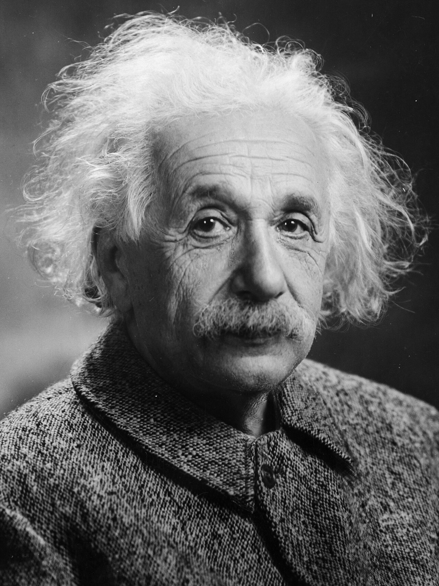
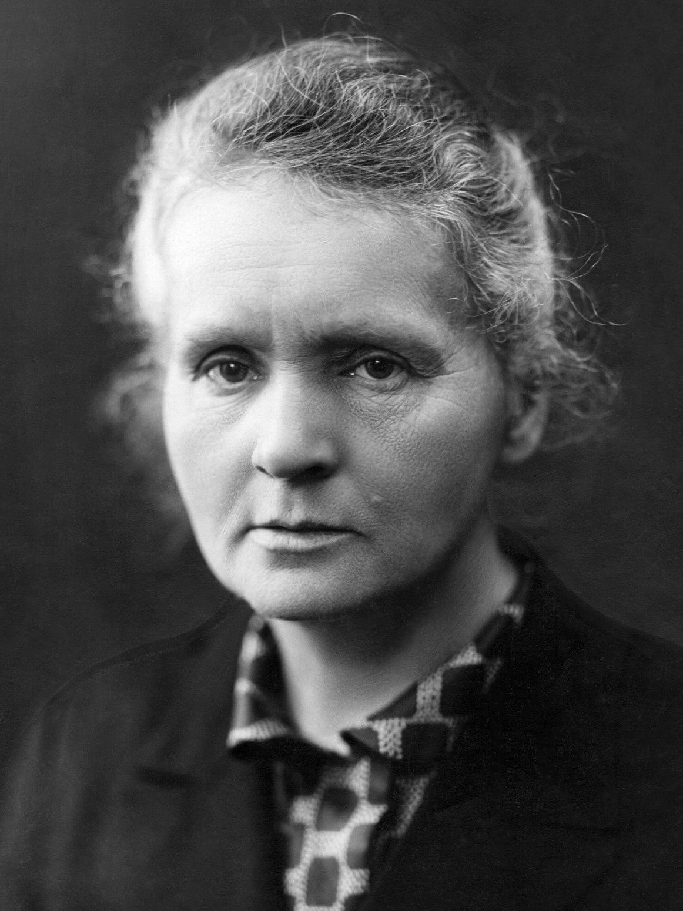

source (Commons)
No picture was attached in any arm. Left: the real source. Middle: from the name alone ("a photorealistic colour portrait of X"). Right: from a 150–220 word VLM description of the face with no name given. The MCP chose the model each time. Scores are a VLM's rating of the result against the source (0–100 usable as a stand-in). Click any image to zoom.

A photorealistic colour portrait photograph of Cornelius Vanderbilt (1794–1877), the American railroad and shipping magnate, depicted in his later years. Head and shoulders, facing camera, recognizable long stern face, deep-set eyes, prominent nose, swept-back white hair and distinctive white sideburns, clean-shaven chin. Historically accurate dark 19th-century suit, white high-collared shirt and black cravat. Professional studio lighting with soft directional key light and gentle fill, natural realistic skin texture and age lines, lifelike colour, neutral dark grey seamless studio background. Square composition, finely detailed photographic realism, no text or watermark.

Create a photorealistic colour photograph of an older man, approximately 60–70, in a vertical, chest-up studio portrait. His torso angles slightly toward the viewer’s left; his nearly upright head turns subtly that way, eyes looking just left of the camera. He has an elongated oval face, a very high, broad, balding forehead, rounded cheeks, a substantial rounded chin, and a softly squared jaw. Light skin shows mottling, fine pores, forehead creases, deep vertical furrows between thick, low-set brows, pronounced crow’s-feet, under-eye folds, and lines beside the nose and mouth. His eyes are narrow, deep-set, and hooded. The nose is long and prominent, with a broad rounded tip and distinct nostril wings. Thin, firmly closed lips form a restrained, serious expression. Sparse, dark brown-and-grey hair sweeps loosely backward across the crown without a sharp part; longer, unruly curls spread around the temples and ears. Bushy grey sideburns descend along the cheeks toward the jaw; the upper lip and chin are shaved. Dress him in mid-nineteenth-century formalwear: black broad-lapelled coat, white high standing collar, white shirtfront, and a voluminous black silk neckcloth. Use soft directional light from upper left, gentle right-side shadows, and a plain medium-grey backdrop. Preserve the original monochrome portrait’s fine grain, slightly softened edges, and sharply legible facial texture while rendering natural, subdued colour.


Photorealistic colour portrait photograph of Mark Twain (Samuel Clemens) in his later years, head and shoulders, facing camera, recognizable unruly white hair, thick white walrus mustache, expressive eyes and lined face, wearing his iconic white suit with white shirt and dark necktie. Professional studio portrait lighting, soft key light and gentle fill, neutral dark grey studio background, natural realistic skin texture and historically plausible clothing, subtle warm colour palette, sharp eyes, fine photographic detail, dignified thoughtful expression. Square composition. No text, no watermark.

Create a photorealistic colour photograph of an elderly, fair-skinned man, approximately seventy, framed vertically from mid-chest upward against a plain charcoal-black studio background. His torso angles slightly toward image-left, his head nearly frontal, chin subtly raised, eyes meeting the camera with a stern, contemplative, unsmiling expression. His face is elongated and broad through the cheekbones, with a high, wide forehead, horizontal forehead creases, deep vertical furrows between bushy silver eyebrows, hooded, deep-set eyes, and pronounced under-eye bags and crow’s-feet. The nose is substantial, with a long broad bridge, rounded drooping tip, and defined nostrils. Weathered cheeks show fine wrinkles and deep folds beside the nose. A thick, coarse silver-white moustache covers the upper lip, sweeping outward and drooping below both mouth corners; the lower lip is narrow, the chin broad and rounded, the jaw softly squared and clean-shaven. Abundant silver-white hair forms a wild, airy halo, loosely side-parted, swept upward and backward in long, fluffy waves over the ears. Dress him in an ivory early-twentieth-century three-piece suit, broad notched lapels, matching waistcoat, high white collar, and small pale bow tie. Broad upper-right frontal light illuminates the hair and forehead, leaving deeper image-left shadows. Preserve vintage portrait softness, fine grain, detailed facial texture, and restrained natural colour.


Photorealistic colour portrait photograph of Abraham Lincoln, historically recognizable facial features, tall forehead, deep-set eyes, prominent cheekbones, distinctive chin curtain beard without moustache, dark swept hair. Head and shoulders composition, facing the camera, dignified calm expression, black 1860s suit, white shirt and black bow tie. Professional studio portrait lighting, soft key light with subtle fill and rim lighting, neutral dark grey seamless studio background. Natural realistic skin texture, lifelike muted colour, sharp eyes, authentic photographic detail, square composition. No text, no frame.

Create a photorealistic colour photograph of a man in his mid-fifties, translating an antique monochrome studio portrait into restrained, lifelike colour. Frame vertically from mid-chest upward, shoulders nearly square, head upright and almost frontal, subtly turned toward the viewer’s left. His long, narrow, asymmetrical face has a high, broad forehead crossed by several deep horizontal wrinkles, prominent cheekbones, hollow cheeks, and a tapering jaw. Fair, weathered skin shows pores, fine creases, pronounced under-eye bags, crow’s-feet, and deep folds running from nose to mouth. Thick, dark, irregular eyebrows overhang deep-set, light grey eyes looking directly toward the camera. The nose is long and prominent, with a broad, rounded tip and defined nostrils. Closed, uneven lips form a firm, unsmiling line, the lower lip fuller. A coarse dark-brown beard, lightly streaked with grey, follows the cheeks and jaw and covers the chin; leave the upper lip clean-shaven. Dark-brown hair, greying in strands, is short around the ears, longer and loosely waved above, side-parted and swept across the crown. Dress him in an 1860s black wool coat, waistcoat, white high-collared shirt, and broad, loosely tied black bow tie. Use directional, moderately soft upper-left lighting, gentle shadows, a plain grey backdrop, fine archival grain, and sharply detailed facial texture.


Photorealistic colour portrait photograph of Albert Einstein, head and shoulders, facing the camera, iconic unruly white hair and white moustache, warm thoughtful expression, realistic aged skin texture, wearing a simple grey wool jacket over a light shirt. Professional studio portrait lighting, soft key light and gentle fill, subtle rim light, neutral charcoal studio backdrop, natural colour rendering, sharp eyes, portrait lens, shallow depth of field, square composition. No text, no watermark.

Create a photorealistic colour photograph of an elderly man, approximately seventy, in a tightly framed, vertical chest-up portrait. His head is nearly upright, turned slightly toward the viewer’s right, with dark, reflective eyes looking directly at the camera. His expression is quiet, thoughtful, and unsmiling. He has a broad, elongated oval face, a high forehead crossed by several deep horizontal furrows, bushy grey eyebrows, hooded eyes with pronounced lower-lid bags, crow’s-feet, and finely creased cheeks. A long, prominent nose has a rounded, fleshy tip and gently flared nostrils. His closed mouth is partly concealed beneath a thick, bristly, silver-white moustache. Show thin lips, a rounded chin, a softly squared jaw, and pale, naturally weathered skin with subtle mottling and deep nasolabial folds; otherwise clean-shaven. Abundant, unruly white hair rises high above the forehead and spreads outward around the ears in fluffy, wavy wisps, swept backward without a definite part. Dress him in a mid-twentieth-century, coarse grey-brown wool jacket with broad overlapping collar points and a dark central button. Illuminate from upper left with moderately soft, directional light, leaving deeper shadows on the opposite cheek. Use a plain, blurred charcoal background, lighter at left. Translate the archival monochrome appearance into restrained natural colour, retaining fine grain, crisp facial detail, and tactile fabric texture.


A photorealistic colour portrait photograph of Marie Curie, head and shoulders, facing the camera, historically faithful recognizable facial features, thoughtful composed expression, dark hair pinned up in her characteristic early 1900s style, modest dark high-neck period dress. Professional soft studio lighting, subtle warm key light and gentle fill, neutral dark grey seamless studio backdrop, realistic skin texture and natural colours, sharp eyes, refined photographic detail. Square composition. No text, no watermark.

Create a photorealistic colour photograph of a woman approximately sixty years old, framed vertically from upper chest to just above her hair. Her head turns slightly toward the viewer’s left, nearly upright, with dark eyes looking directly toward the camera. She has a long, broad oval face, high expansive forehead, subtly hollow cheeks, firm narrowing jaw, and rounded, moderately prominent chin. Fair skin shows fine forehead creases, a pronounced vertical furrow between the brows, crow’s-feet, under-eye folds, visible pores, and faint uneven pigmentation. Low, gently arched, sparse grey-brown eyebrows sit above deep-set, slightly hooded eyes. Her nose has a straight, substantial bridge and softly rounded tip; her small mouth is closed, with thin, pale lips and slightly downturned corners. Her expression is solemn, composed, and unsmiling. Grey hair with darker strands is loosely swept backward from an indistinct off-centre part, gathered behind her head, with airy waves and numerous fine flyaways around the temples and crown; no facial hair. Dress her in an early-twentieth-century dark wool jacket over a high, folded collar with contrasting geometric checks. Broad, soft light from upper left illuminates her forehead and left cheek, leaving gentle right-side shadows. Use a plain charcoal studio background, restrained natural colour, fine photographic grain, sharply resolved facial texture, and slightly softer clothing.